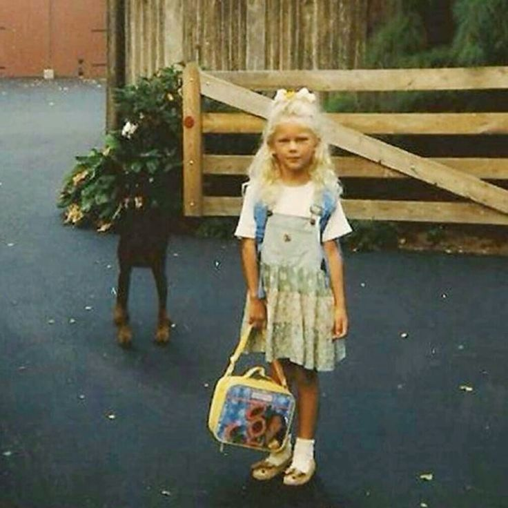

Taylor Alison Swift, mas conocida como Taylor Swift, nacio el 13 de diciembre de 1989 en Reading, Pensilvania, Estados Unidos.
Sus padres son Scott Swift y Andrea Swift, tambien tiene un hermano menor Austin Swift.
En su infancia vivio en una granja de árboles de Navidad en Wyomissing, donde desarrolló su interés por la música. Desde muy pequeña mostró afinidad por el canto y la escritura,
esto tambien influenciada por su abuela Marojorie, quien era una cantante de opera.
A sus 8 años, por navidad le regalaron su primera guitarra, y a partir de ahi su interes por la musica no dejo de crecer.
Desde muy chica comenzo a escribir canciones, a sus 12 años escribio canciones como "Lucky You" o "The Outside", y a los 16 años saco su primer
sencillo "Tim McGraw" y luego su album debut.
Pero antes de todo esto tuvo un camino largo para lograr que una discografica sacara algun tema de ella y mucho más un album. Taylor junto a su madre, viajaban hacia Nashville con con el objetivo de conseguir un contrato discográfico, repartiendo demos de sus canciones, a los 11 años comenzo a hacer estos viajes, y los siguio haciendo hasta sus 14 años que la familia se mudó a ahi para apoyar su carrera musical. Fue a esas edad que firmo su contrato de desarrolló con el sello discografico RCA Records. Luego un año despues a sus 15 años firmo con Big Machin Records, con quienes sacaria finalmente un año despues su primer sencillo junto con su primer album y sus siguientes cinco albumes.
Taylor es una de las artistas mas exitosas de todos los tiempos, desde que comenzo no dejo de batir records como:
- Ser la unica artista en ganar 4 veces el Grammy al album del año
- Primera artista en ocupar todo el Top 10 del Billboard Hot 100
- Múltiples álbumes con más de 1 millón de ventas en su primera semana
- Más de 200 millones de discos vendidos en todo el mundo
- Primera artista femenina en superar los 100 mil millones de streams en Spotify
- Álbum más escuchado en un día (Midnights) en Spotify
- The Eras Tour es la gira mas taquillera de la historia (más de 1 billón de dólares)
- Fue nombrada Persona del Año de TIME (2023)
- Cambió la industria musical con los Taylor’s Version
A lo largo de su carrera, Taylor Swift se ha consolidado como una de las artistas más influyentes de su generación. Su capacidad para reinventarse, su talento como compositora y su impacto en la industria musical la han convertido en una figura clave de la música contemporánea.